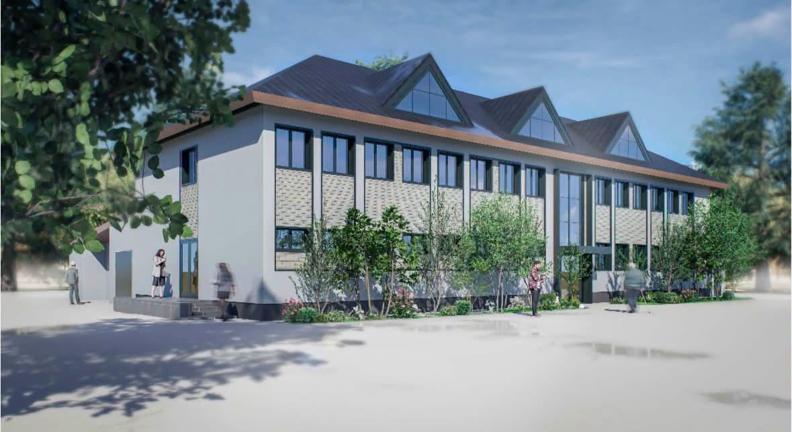

Un nou proiect al Consiliului Județean Mehedinți a intrat în etapa de contractare. Proiectul „Consolidarea seismică și creșterea eficienței energetice a corpului C1 cu destinația de Pavilion Administrativ, Punct de Comandă și Depozit Materiale Speciale" va fi finanțat prin Programul Regional Sud-Vest Oltenia 2021-2027.
Este vorba despre clădirea în care funcționează Serviciul de Protecție Civilă al Inspectoratului pentru Situații de Urgență „Drobeta", situată pe strada I.C. Brătianu, din municipiul Drobeta-Turnu Severin. Imobilul va fi complet reabilitat și modernizat prin acest proiect.
Valoarea totală a investiției este de 9.339.053,17 lei. Prin implementarea proiectului vor fi realizate lucrări de consolidare seismică și de creștere a eficienței energetice a clădirii, contribuind la creșterea gradului de siguranță și la reducerea consumului de energie.
Parte din valoarea investiției va fi suportată de Consiliul Județean Mehedinți.
„Chiar dacă este un efort financiar, ne dorim ca serviciile publice să fie din ce în ce mai bune pentru cetățeni, iar astfel de investiții contribuie la creșterea gradului de eficiență", transmite conducerea Consiliului Județean Mehedinți.
Autoritățile județene precizează că vor continua să pregătească și să implementeze proiecte cu finanțare europeană care contribuie la modernizarea infrastructurii publice și la dezvoltarea județului Mehedinți.